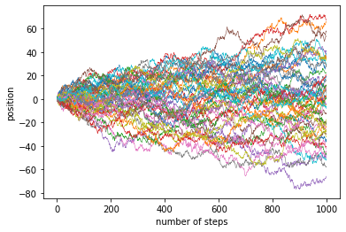

def make_gaussian_random_walk(length, step_size=1.):
random_walk = tfd.TransformedDistribution(
tfd.TransformedDistribution(
tfd.Sample(tfd.Normal(loc=0, scale=step_size), sample_shape=(length-1,)),
tfb.Pad(paddings=((1,0),))
),
tfb.Cumsum()
)
return random_walkUnlike PyMC3, TensorFlow-Probability does not provide (yet) direct implementations of random walks, but the corresponding distributions can be constructed through the application of the tfb.Cumsum() bijector on steps drawn from a normal distribution. In many applications, we are interested in a random walk that starts at the origin, because we measure the starting point, or model it with a specific random variable, and we want to simulate the evolution of a system subject to Brownian dynamics. This can be achieved with a zero padding at the start of the process, for instance with tfb.Pad(paddings=((1,0),)). The following function illustrates that construction:
The sample method of the resulting tfp distribution allows us to quickly simulate realizations of a random walk.

To make sure that this implementation actually works, we can reproduce the analysis of the stochastic volatility model treated in the PyMC3 documentation, and described as an example in the original No-U-Turn sampler paper by Hoffman and Gelman. Incidentally, it is how I found out that starting at zero was important. At first I was not doing it, and it led to an overestimation of the volatility at the onset of the time series.
The goal is to model the volatility of the S&P 500 index.
The model is described in the PyMC3 example and the NUTS paper, so we just provide the TensorFlow-Probability version:
stoch_vol_mdl = tfd.JointDistributionSequential([
#step_size
tfd.Exponential(10, name='step_size'),
#volatility
lambda step_size: make_gaussian_random_walk(observed_returns.shape[0], step_size),
#nu (degrees of freedom)
tfd.Exponential(0.1, name='nu'),
#returns
lambda nu, volatility, step_size: tfd.Independent(
tfd.StudentT(df=nu[...,tf.newaxis],
loc=0,
scale=tf.math.exp(volatility),
name='returns'),
reinterpreted_batch_ndims=1
)
])To infer the posterior distributions, we also use the No-U-Turn sampler, and we can compare the marginal posteriors of the nu and step_size parameters as well as the estimated volatility over time with the results of the PyMC3 case study to gain confidence in the validity of the method.
Code
# Specify the MCMC algorithm.
dtype = tf.dtypes.float32
nchain = 5
ssize0, vol0, nu0, _ = stoch_vol_mdl.sample(nchain)
init_state = [ssize0, vol0, nu0]
step_size = [tf.cast(i, dtype=dtype) for i in [.1, .1, .1]]
target_log_prob_fn = lambda *init_state: stoch_vol_mdl.log_prob(
list(init_state) + [observed_returns])
# bijector to map contrained parameters to real
unconstraining_bijectors = [
tfb.Exp(),
tfb.Identity(),
tfb.Exp()
]
@tf.function(autograph=False, experimental_compile=True)
def run_chain(init_state, step_size, target_log_prob_fn, unconstraining_bijectors,
num_steps=1000, burnin=1000):
def trace_fn(_, pkr):
return (
pkr.inner_results.inner_results.target_log_prob,
pkr.inner_results.inner_results.leapfrogs_taken,
pkr.inner_results.inner_results.has_divergence,
pkr.inner_results.inner_results.energy,
pkr.inner_results.inner_results.log_accept_ratio,
pkr.inner_results.inner_results.is_accepted
)
kernel = tfp.mcmc.TransformedTransitionKernel(
inner_kernel=tfp.mcmc.NoUTurnSampler(
target_log_prob_fn,
step_size=step_size),
bijector=unconstraining_bijectors)
hmc = tfp.mcmc.DualAveragingStepSizeAdaptation(
inner_kernel=kernel,
num_adaptation_steps=burnin,
step_size_setter_fn=lambda pkr, new_step_size: pkr._replace(
inner_results=pkr.inner_results._replace(step_size=new_step_size)),
step_size_getter_fn=lambda pkr: pkr.inner_results.step_size,
log_accept_prob_getter_fn=lambda pkr: pkr.inner_results.log_accept_ratio
)
chain_state, sampler_stat = tfp.mcmc.sample_chain(
num_results=num_steps,
num_burnin_steps=burnin,
current_state=init_state,
kernel=hmc,
trace_fn=trace_fn)
return chain_state, sampler_stat
# Run the chain
samples, sampler_stat = run_chain(
init_state, step_size, target_log_prob_fn, unconstraining_bijectors)